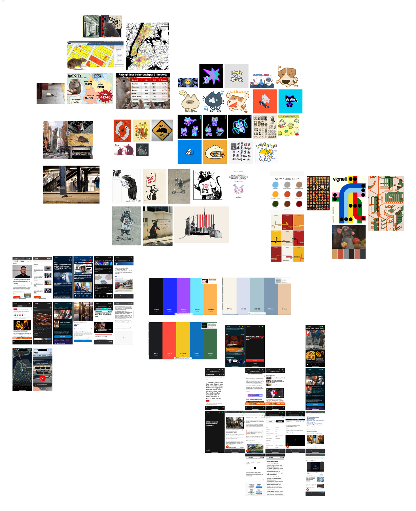
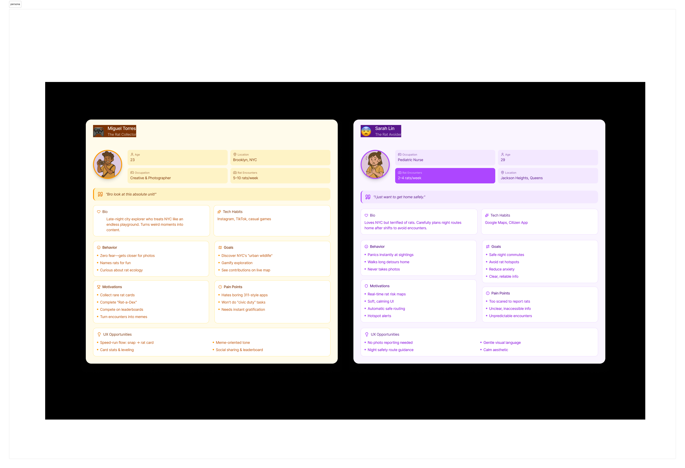
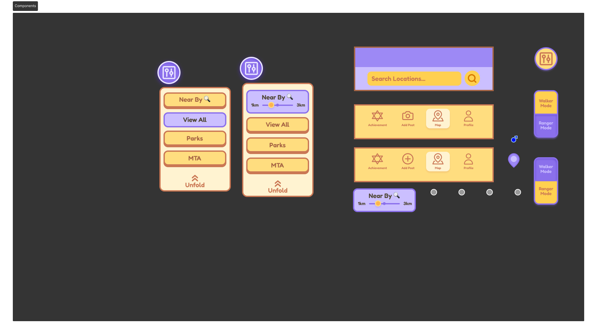
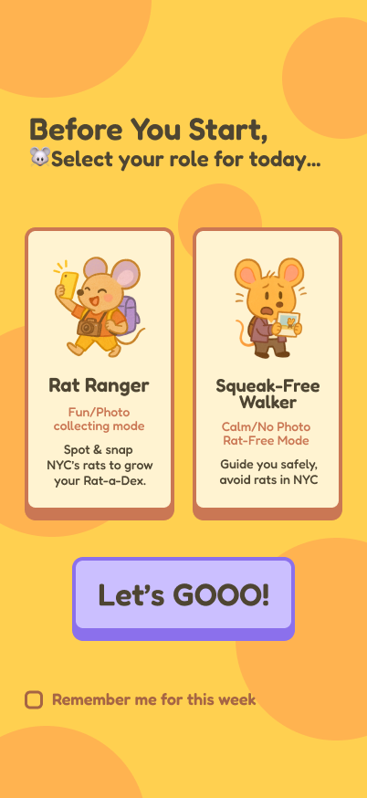
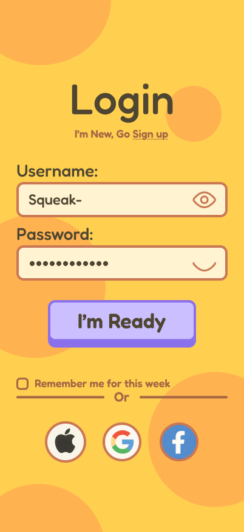
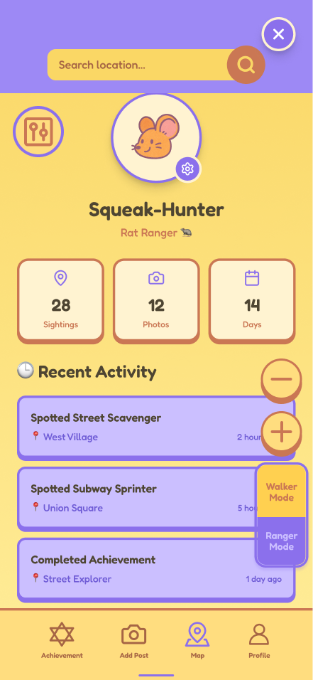

Overview
Squeak is an AI-assisted product prototype that turns NYC rat reporting and avoidance into a playful civic experience. Instead of designing another formal reporting form, I used the project to explore how AI tools, emotional user segmentation, and human design judgment could work together in a fast product workflow.
The project reframes a common urban problem through a dual-mode system: one mode for users who are curious enough to document rat sightings, and another for users who are afraid of rats and simply want safer routes.
The core design question: how can one civic platform support both playful participation and emotional avoidance without forcing all users into the same experience?
The Problem
NYC has a rat problem everyone knows about but no one agrees how to deal with. The existing civic tool — 311 — is slow, formal, and emotionally disconnected from how people actually experience rats in the city. Some people find rats funny and shareable. Others are genuinely afraid of them. No single reporting tool served both.
The design question: how do you build one civic platform that supports playful participation and emotional avoidance without forcing all users into the same experience?
Moodboard
Research and visual reference — rat culture in NYC (data maps, street art, pop culture), competing civic apps, color palette exploration, and visual tone-setting.

Sitemap
The sitemap defined the dual-mode structure — splitting the app at onboarding into Rat Ranger and Squeak-Free Walker paths, each with distinct screens and interaction logic.

Personas
Two personas defined the emotional range of the product — one driven by curiosity and play, the other by anxiety and avoidance. The design had to work for both without compromise.

Design System
Components and visual language built in Figma — the yellow/purple palette, UI elements, icon set, and interaction patterns that carry across both modes.

Final Interface
The final screens built with FigMake — loading screen, onboarding, map view, filters, and rat reporting flows across both user modes.






.png)
.png)
Reflection
Squeak demonstrates my ability to integrate AI tools into a design workflow while still leading the product direction. The project shows that I can use AI for speed while applying human judgment to user segmentation, emotional design, interaction logic, and visual hierarchy. It connects to my broader practice: building systems that turn messy real-world behaviors into structured, engaging experiences.
Squeak taught me that civic design does not always need to feel serious to be useful. Playfulness can reduce fear and make participation easier. The most important design decision was the dual-mode structure: without separating Rat Rangers from Squeak-Free Walkers, the app would have forced very different users into the same experience. AI is a fast prototyping partner that still needs strategy, editing, and emotional intelligence.